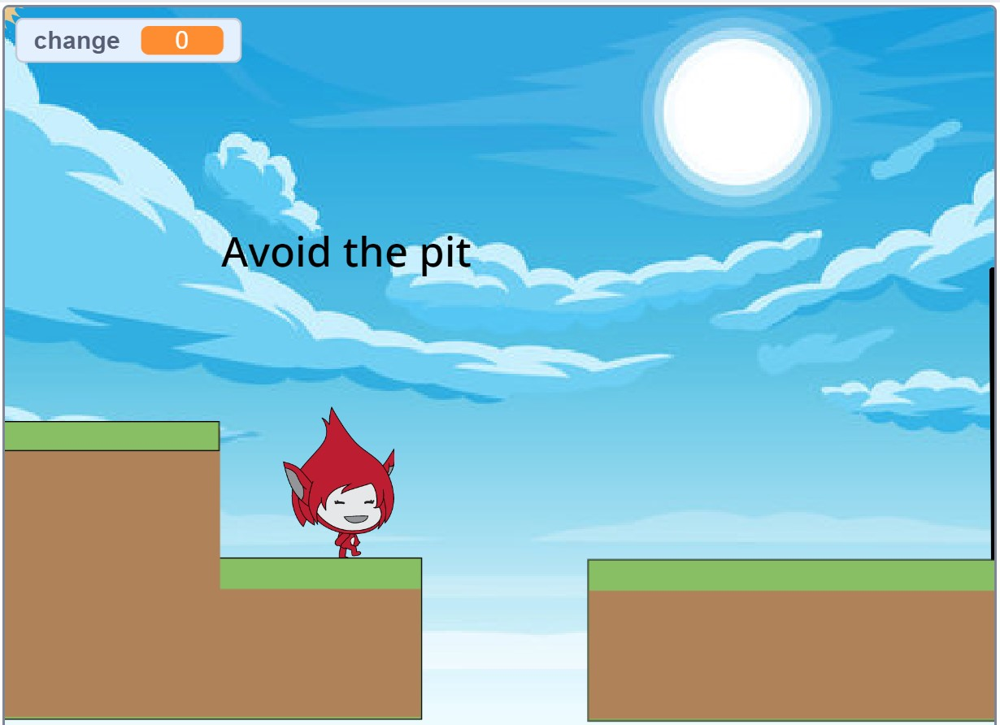

This is my Portfolio Page!
1.1.9 - Cupcake Maker.


In this project, we made a cupcake based on the input the user gave. The user is can customize their cupcake based on cupcake flavor, frosting flavor, toppings, and sprinkles. If a user enters an invalid answer, the program continues and skips that section of the cupcake making. We used the turtle in order to draw multiple shapes and parts of the cupcake.
1.2.5 - Snake Game.
In this game, the snake is controlled by the arrow keys on the keyboard. For example, if you press the downward arrow, the snake moves down. The point of the game is to try to get the snake to eat the food (the circles). Each time the snake touches/eats the food, the food relocates and the snake gets faster. The leaderboard at the end tallies up how much food the user was able to make the snake eat.
1.3.1 - Santa's Coming To Town.
Our Christmas E-Card is for the Children's Hospital. It first asks the user to input their name, then, their name shows up on the screen where we wish them good luck to play. For the game, we instruct the children to press the space bar and deliver the presents to the children on the screen from Santa's sleigh. When a present is delivered, the children relocate.
Scratch Program - Platformer.

In this project, the user is able to control our character named "giga" using the arrow keys. The goal is to get past the obstacles by jumping and moving forward. There are 4 stages and each one is different. They appear each time you complete the previous stage and when "giga" touches the right side of the screen. If user wins, it says "You Win", if user falls in pit or hits obstacles, it says "You Lose".
3.1.6 - Rover Phone Home.